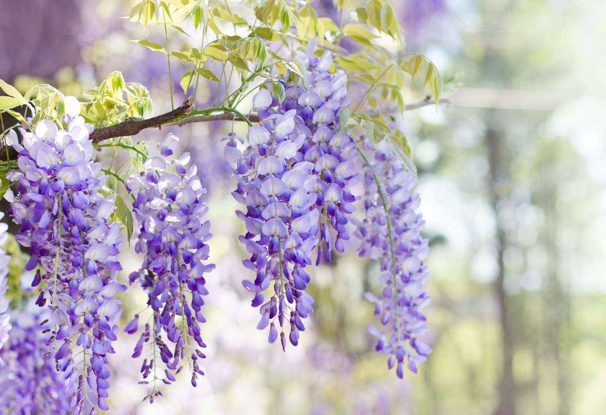

This Website's Purpose
This website’s purpose is to provide a location and set up the current and future assignments for my CS 312 class during this summer. In terms of content, this website’s purpose is to store information concerning various facts and facets of flora. The Garden will focus on various flowers and their roles in both the past and the present. This will at minimum include floriography, common symbology, traditional usages, modern utilities, and personal favorites/thoughts. The following subheadings will provide brief insights into potential future pages.
Floriography & Gift Giving
Floriography is commonly known as the language of flowers. It was particularly prevalent during the Victorian Era in England and France, and its notability spread through the art of gifting flowers. The species, color, arrangement, amount, and even direction of the bouquet could all indicate various details about the intended message. While the finer nuances of this language have been lost to time, floral gift giving still remains a relatively massive part of the modern world to denote affection to various loved ones. This section/page will cover some interesting points about floral gifts in the Victorian Era including the “syntax” of the language, a few examples, and modern differences.
Contemporary Uses
The day-to-day uses of flowers do indeed include gift giving as covered in the aforementioned page/section. However, their contemporary uses include far more than just gifts. Flora have been a part of medicine making for years, and that hasn’t entirely gone away either. Certain cultures also have spiritualistic significance with specific species, and funeral flowers across the globe can also differ. This section/page will cover these points of interest in regards to the contemporary uses of flowers.
Personal Thoughts & Favorites
This section/page has a relatively self-explanatory heading. I have fairly strong opinions on both the good and bad sides of various flowers. My personal favorites rotate based on how I’m feeling that day, but I do have a relatively stable roster I keep in the back of my mind. Similarly, I have some that I find I dislike much more than the average person. Finally, there are some flowers that don’t quite fit into either of the previous categories, but they still remain fascinating proponents of nature to me.